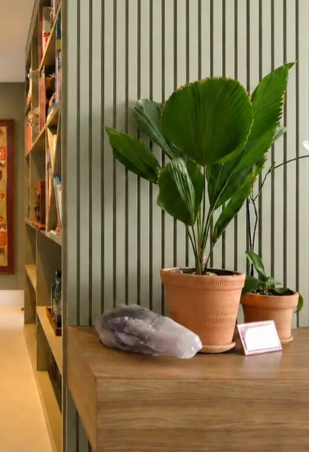
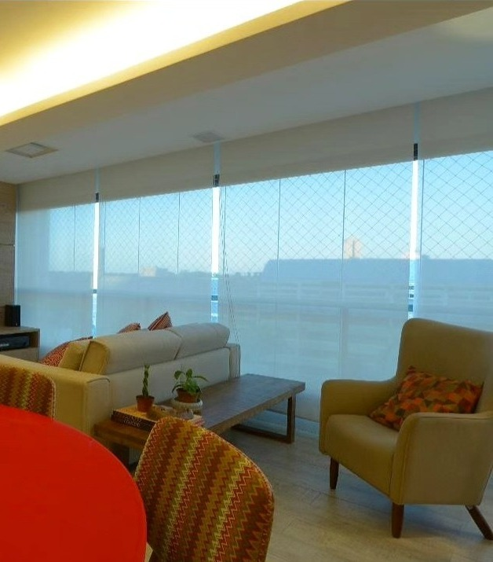

Apartamento 01
Rio Vermelho
uma atmosfera mais intimista
- Bairro
- Rio Vermelho, Salvador
- O que mudou
- Piso, cores, marcenaria personalizada e iluminação
- Fotos
- Roberto Moreira Rego



nunca a mesma casa duas vezes
Apartamento 01
uma atmosfera mais intimista

Apartamento 02
reconstruir, mudar, transformar

“Achar um lugar no mundo para pousar e repousar.”
Débora Reis
Apartamento 03
um refúgio urbano

“Aconchego é escolher os detalhes certos.”
Débora Reis
[ Detalhes ]
Recortes de projetos: a estante, o pendente, o nicho.
Detalhe · a estante
cada título, uma lembrança

“Uma casa sem livros pode ser bonita. Mas uma casa com livros tem alma.”
Débora Reis
Detalhe · o pendente
feito à mão, imperfeito

“O luxo de um interior está nisso: não parecer que foi comprado inteiro de uma vez.”
Débora Reis
Detalhe · o nicho
azul + madeira

“Uma combinação que poderia ser previsível, mas aqui ganhou outra conversa.”
Débora Reis
o próximo pode ser o seu